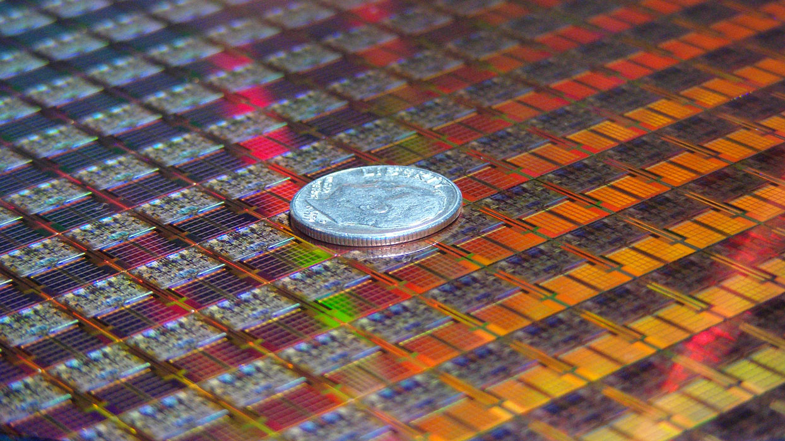

What they do and how they work?
Transistors are a semiconductor device with three connections commonly found in most, if not all modern electronics.
Overall, transistors have two main function, they can serve as amplifiers and as switches. When working as an amplifier, the transistor takes in a tiny electrical current at one end, this is known as the input current, and it then produces a much higher electrical current, known as the output current. Given this property, transistors became very useful in their early implementations in hearing aids in the 50’s and 60’s.
The second function a transistor has is as a switch. This is probably it’s most important function when it comes to computers, specifically, computer processors. Over the decades, transistors have become increasingly and astonishingly small, compared to when they where created. However, despite this, their function as switches has remained the same. As a transistor receives a tiny electric current it “turns on” a much stronger current. This process is continuously repeated and combined with other transistors to create what’s called a logic gate. Logic gates help perform Boolean logic for the computers most fundamental functions. For more on how they work, please visit this link.